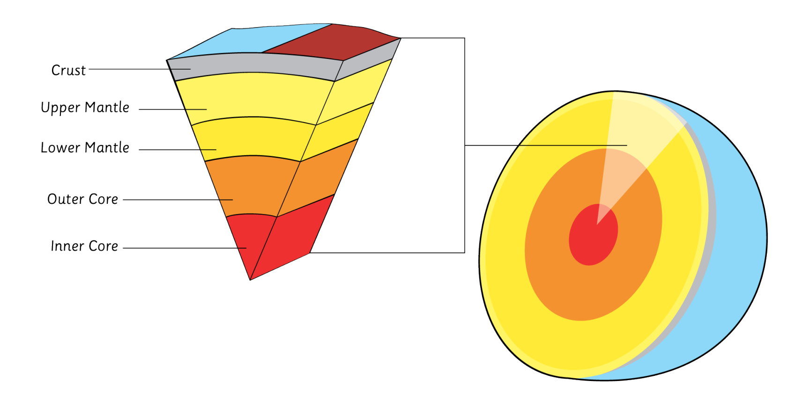
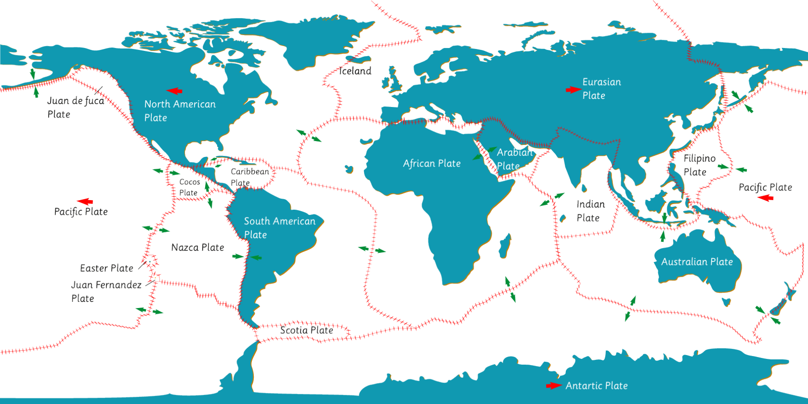
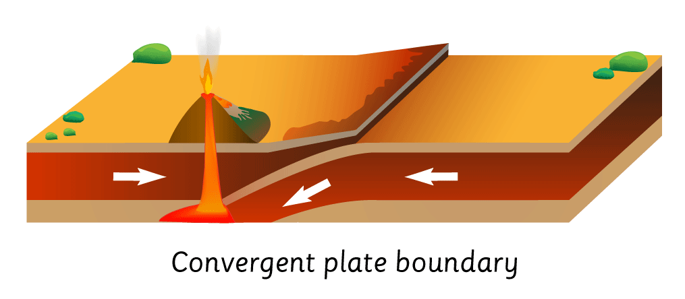
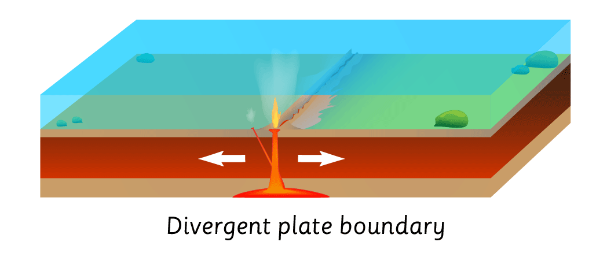
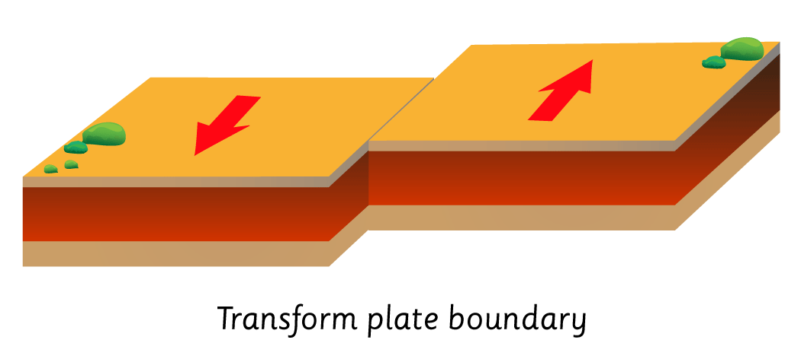
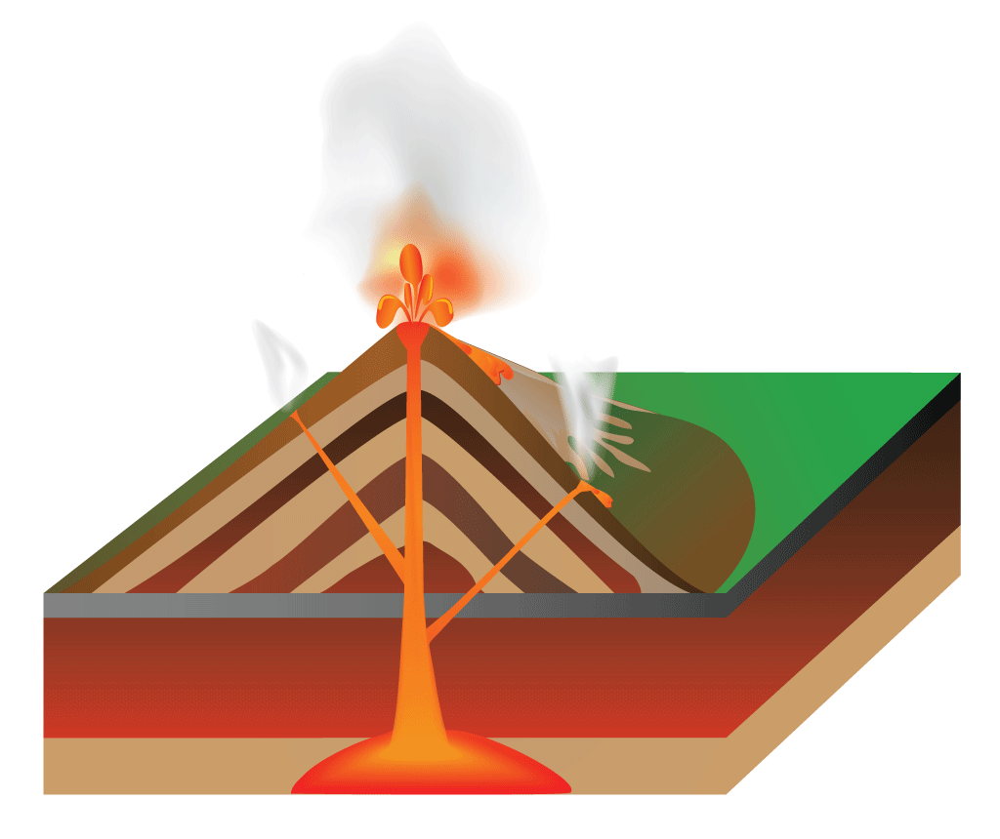
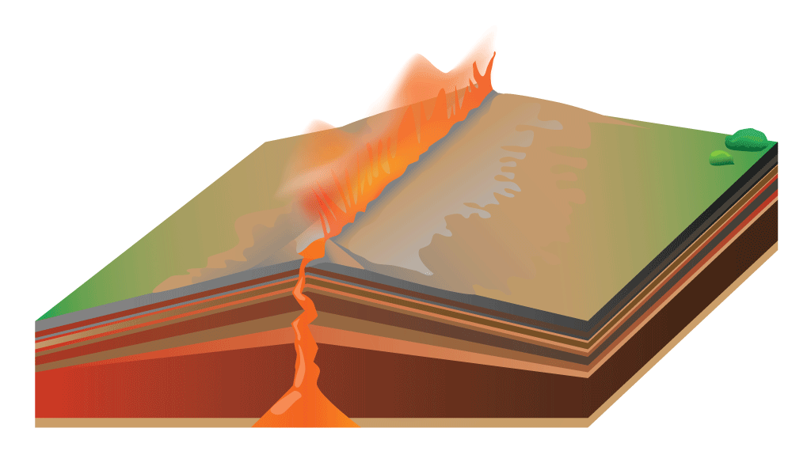
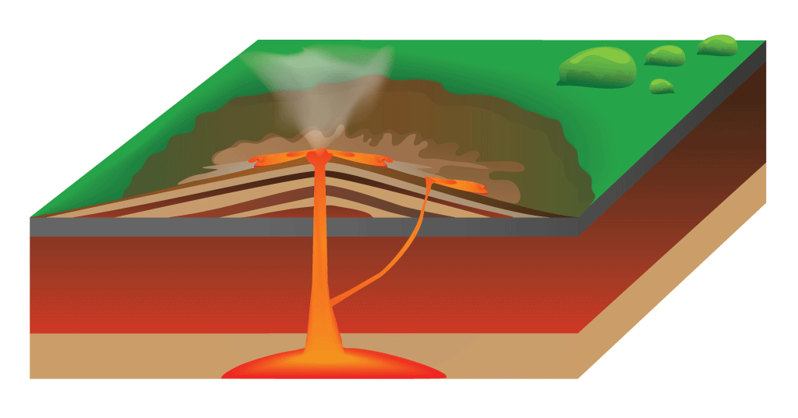
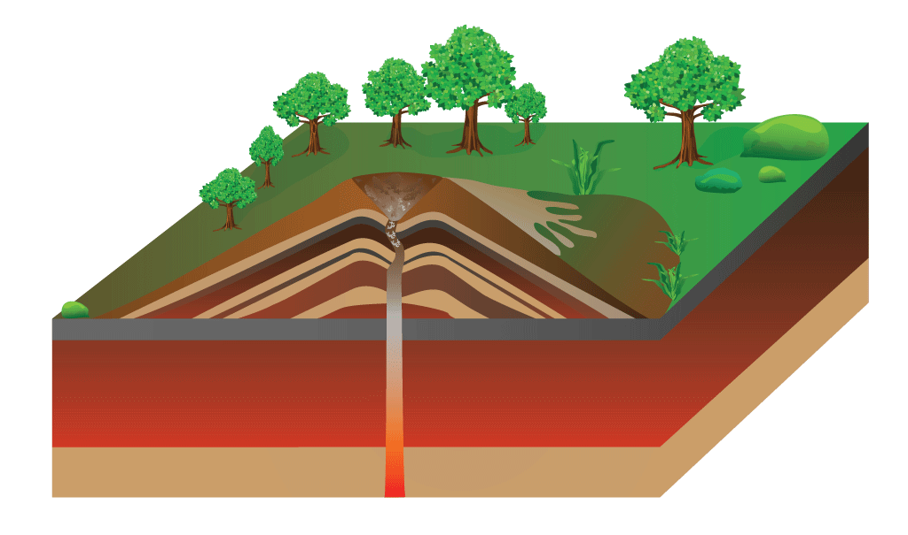

Written by Katherine, 29 May 2017
Here I will be using Iceland as an example
Iceland is one of the most active volcanic regions in the world, with significant eruptions occurring on average once every three years. Volcanoes are so common in Iceland that approximately one third of all the lava emitted on earth in the past 500 years is found in Iceland. In the last 10,000 years, 35 of Iceland's roughly 130 volcanoes have been active.
Before we can start looking at Iceland's volcanoes, it is useful to understand what causes them. Lets take a look at what is underneath the ground

The earth's surface is made up of a collection of seven or eight major and many minor tectonic plates floating atop a semi-molten mantle.
The mantle is one of earth's three layers, the others being the crust and the core. The earth's crust is about as thin to earth as an apple's skin is to the flesh, and includes the land and sea floor. The mantle lies beneath the crust and is split into two parts: the upper mantle and semi-molten lower mantle. The earth's core is also split into two parts: the semi-molten outer core and the solid inner core.
The Earth's Tectonic plates are shown in the diagram below. Note the Mid-Atlantic Ridge slicing through Iceland.

Mountain ranges, such as the Andes in South America, and the Himalayas in Asia are visible evidence of massive collisions between tectonic plates. Other symptoms of tectonic plate movement include volcanoes and earthquakes at the boundaries where the plates meet.
There are three types of tectonic plate boundaries: convergent, divergent and transform.
Convergent boundaries occur when continental and oceanic tectonic plates move towards each other, and result in destructive plate margins. At these margins, one plate slides under another, which can result in major earthquakes. The heat caused by the friction of the one plate sliding under the other can lead to the crust melting back into magma, and if this magma rises up, it can form volcanoes. When these volcanoes are on land, they are likely to form large fold mountains, such as the Andes in South America, or island chains, such as Indonesia or Japan.

Divergent boundaries, as found in Iceland and other sea floor areas, happen when the plates move apart and result in constructive plate margins. As the gap in the middle of the diverging plates opens, it is filled with magma, and where it reaches the surface, volcanoes are formed.

Transform faults happen when the tectonic plates move against each other, and result in conservative plate margins. While earthquakes and tremors can be frequent at conservative plate margins, volcanoes are not found. This is because the earth’' crust is neither created or destroyed at transform faults.

In Iceland, the North American and Eurasian Plates are divergent and are tearing apart at a rate of around 2 centimetres per year. The Mid-Atlantic Ridge runs directly across Iceland, from the southwest to the northeast. Iceland's biggest volcanos trace this ridge, along with many hot springs, stream springs and volcanic craters.
One of the best places to explore tectonic plate divergence is in Þingvellir, a Rift Valley.
Iceland is home to many forms of volcanos, including Stratovolcanos (or Composite Volcanos), Fissure Vents, Shield Volcanos and Cinder Cone Volcanos.
Stratovolcanos are typically steep-sided and are made up of many layers of hardened lava, ash and other volcanic by-products resulting from multiple eruptions. Stratovolcanoes often will appear in a sequence of explosive and gentle eruptions. The steep sides are due to the thick and sticky magma. Hekla, in Southern Iceland is a Stratovolcano, and can be seen easily from Routes 26 and 32.

Fissure Vents are linear volcanic vents through which lava erupts, usually without explosive activity. The vents are often a few meters wide and can be tens of kilometres in length. The Holuhraun eruption of 2014 – 2015 was a typical Fissure Vent eruption (see the top of the page for another image). Fissure Vents tend to form a built up plateau of basaltic lava that cools down slowly, sometimes leading to the hexagonal columnar structures found all over Iceland, most famously at the Svartifoss falls and on the beach at Vik.

Shield volcanoes are the relatively gentle giants of Volcanoes. They have gentle slopes thanks to their very liquid lava, and can be many kilometers wide. In Iceland, there are several shield volcanoes in the highlands, including the Skjaldbreiður Volcano (Icelandic for Broad Shield), which gives these volcanoes their name. Skjaldbreiður lies northeast of the Þingvellir Park, along Route 550.

A cinder cone volcano is a steep hill made up of loose volcanic fragments formed by explosive eruptions or lava fountains from a single, typically cylindrical, vent. As the gas-charged lava is blown violently into the air, it breaks into small fragments that solidify and fall around the vent to form a cone. Most cinder cones have a bowl-shaped crater at the summit.
Kerið, on Route 35 in southern Iceland is believed to be an example of a Cinder Cone Volcano.
